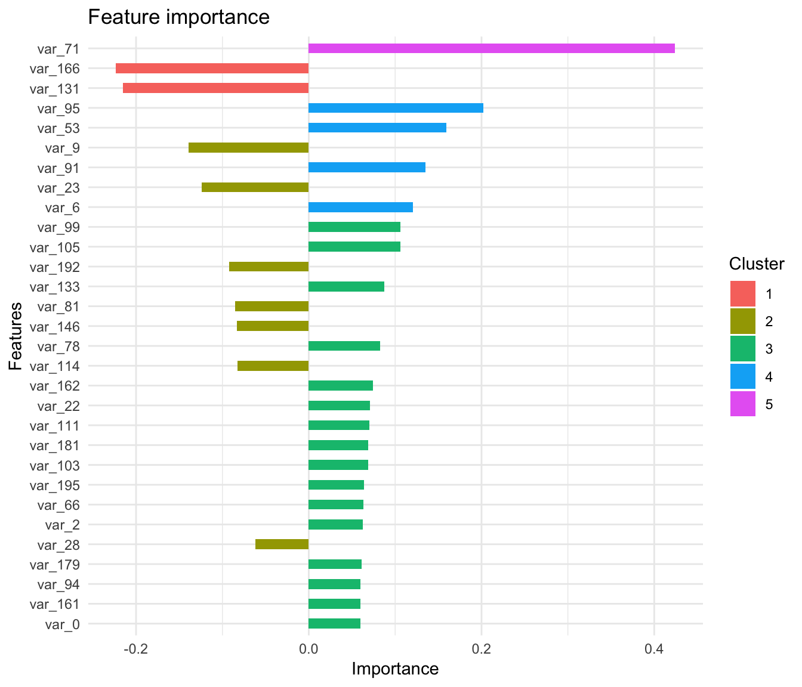
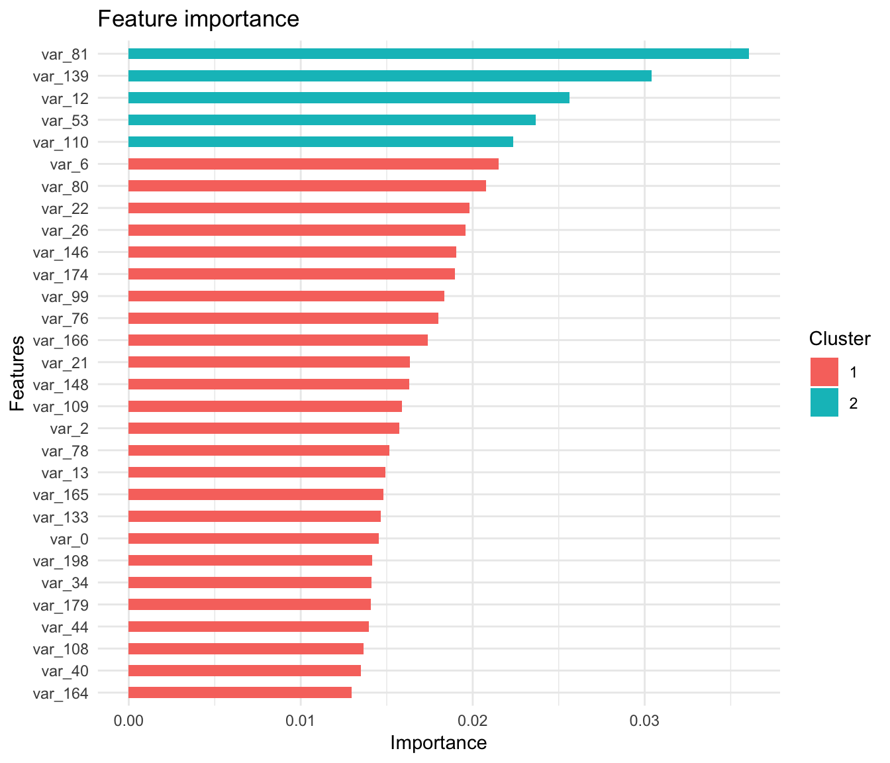

library(data.table)
library(dplyr)
library(rsample)
library(xgboost)
require(Ckmeans.1d.dp)
library(ggplot2)train <- fread(file = "train.csv")
train[1:10,1:14]## ID_code target var_0 var_1 var_2 var_3 var_4 var_5 var_6
## 1: train_0 0 8.9255 -6.7863 11.9081 5.0930 11.4607 -9.2834 5.1187
## 2: train_1 0 11.5006 -4.1473 13.8588 5.3890 12.3622 7.0433 5.6208
## 3: train_2 0 8.6093 -2.7457 12.0805 7.8928 10.5825 -9.0837 6.9427
## 4: train_3 0 11.0604 -2.1518 8.9522 7.1957 12.5846 -1.8361 5.8428
## 5: train_4 0 9.8369 -1.4834 12.8746 6.6375 12.2772 2.4486 5.9405
## 6: train_5 0 11.4763 -2.3182 12.6080 8.6264 10.9621 3.5609 4.5322
## 7: train_6 0 11.8091 -0.0832 9.3494 4.2916 11.1355 -8.0198 6.1961
## 8: train_7 0 13.5580 -7.9881 13.8776 7.5985 8.6543 0.8310 5.6890
## 9: train_8 0 16.1071 2.4426 13.9307 5.6327 8.8014 6.1630 4.4514
## 10: train_9 0 12.5088 1.9743 8.8960 5.4508 13.6043 -16.2859 6.0637
## var_7 var_8 var_9 var_10 var_11
## 1: 18.6266 -4.9200 5.7470 2.9252 3.1821
## 2: 16.5338 3.1468 8.0851 -0.4032 8.0585
## 3: 14.6155 -4.9193 5.9525 -0.3249 -11.2648
## 4: 14.9250 -5.8609 8.2450 2.3061 2.8102
## 5: 19.2514 6.2654 7.6784 -9.4458 -12.1419
## 6: 15.2255 3.5855 5.9790 0.8010 -0.6192
## 7: 12.0771 -4.3781 7.9232 -5.1288 -7.5271
## 8: 22.3262 5.0647 7.1971 1.4532 -6.7033
## 9: 10.1854 -3.1882 9.0827 0.9501 1.7982
## 10: 16.8410 0.1287 7.9682 0.8787 3.0537set.seed(100)
train_test_split <- rsample::initial_split(train, prop = 0.8)
train_test_split## <160001/39999/200000>We can retrieve our training and testing sets using training() and testing() functions.
# Retrieve train and test sets
train_8 <- rsample::training(train_test_split)
test_2 <- rsample::testing(train_test_split)
train_8[1:10, 1:14]## ID_code target var_0 var_1 var_2 var_3 var_4 var_5 var_6
## 1: train_1 0 11.5006 -4.1473 13.8588 5.3890 12.3622 7.0433 5.6208
## 2: train_2 0 8.6093 -2.7457 12.0805 7.8928 10.5825 -9.0837 6.9427
## 3: train_3 0 11.0604 -2.1518 8.9522 7.1957 12.5846 -1.8361 5.8428
## 4: train_5 0 11.4763 -2.3182 12.6080 8.6264 10.9621 3.5609 4.5322
## 5: train_7 0 13.5580 -7.9881 13.8776 7.5985 8.6543 0.8310 5.6890
## 6: train_8 0 16.1071 2.4426 13.9307 5.6327 8.8014 6.1630 4.4514
## 7: train_10 0 5.0702 -0.5447 9.5900 4.2987 12.3910 -18.8687 6.0382
## 8: train_11 0 12.7188 -7.9750 10.3757 9.0101 12.8570 -12.0852 5.6464
## 9: train_12 0 8.7671 -4.6154 9.7242 7.4242 9.0254 1.4247 6.2815
## 10: train_13 1 16.3699 1.5934 16.7395 7.3330 12.1450 5.9004 4.8222
## var_7 var_8 var_9 var_10 var_11
## 1: 16.5338 3.1468 8.0851 -0.4032 8.0585
## 2: 14.6155 -4.9193 5.9525 -0.3249 -11.2648
## 3: 14.9250 -5.8609 8.2450 2.3061 2.8102
## 4: 15.2255 3.5855 5.9790 0.8010 -0.6192
## 5: 22.3262 5.0647 7.1971 1.4532 -6.7033
## 6: 10.1854 -3.1882 9.0827 0.9501 1.7982
## 7: 14.3797 -0.4711 7.3198 4.6603 -14.0548
## 8: 11.8370 1.2953 6.8093 -6.1501 -5.4925
## 9: 12.3143 5.6964 6.0197 5.2524 -4.5162
## 10: 20.9729 1.1064 8.6978 2.3287 -11.3409Here, we can see after how many rounds, we achieved the smallest test error:
dtrain <- xgb.DMatrix(as.matrix(train_8[, -c(1,2)]),
label = as.numeric(train_8$target))
dtest <- xgb.DMatrix(as.matrix(test_2[, -c(1,2)]),
label = as.numeric(test_2$target))
params <- list(max_depth = 2,
objective = "binary:logistic",
silent = 0)
watchlist <- list(train = dtrain, eval = dtest)
cv_model <- xgb.cv(params = params,
data = dtrain,
nrounds = 100,
eta = 1,
watchlist = watchlist,
nfold = 5,
verbose = TRUE,
prediction = TRUE) # prediction of cv folds## [1] train-error:0.101349+0.000219 test-error:0.101349+0.000876
## [2] train-error:0.101321+0.000203 test-error:0.101349+0.000853
## [3] train-error:0.101479+0.000323 test-error:0.101649+0.001211
## [4] train-error:0.101707+0.000306 test-error:0.102075+0.001236
## [5] train-error:0.101406+0.000215 test-error:0.102093+0.001292
## [6] train-error:0.101474+0.000334 test-error:0.102456+0.001200
## [7] train-error:0.101437+0.000243 test-error:0.102756+0.000954
## [8] train-error:0.101135+0.000461 test-error:0.102931+0.001127
## [9] train-error:0.100767+0.000313 test-error:0.102406+0.001100
## [10] train-error:0.100459+0.000302 test-error:0.102118+0.000953
## [11] train-error:0.100021+0.000324 test-error:0.102218+0.001120
## [12] train-error:0.099598+0.000409 test-error:0.101924+0.001175
## [13] train-error:0.099248+0.000419 test-error:0.101762+0.000944
## [14] train-error:0.098729+0.000293 test-error:0.101374+0.001114
## [15] train-error:0.098246+0.000347 test-error:0.101056+0.000788
## [16] train-error:0.097755+0.000370 test-error:0.100968+0.000654
## [17] train-error:0.097325+0.000321 test-error:0.100675+0.000862
## [18] train-error:0.097015+0.000426 test-error:0.099962+0.000553
## [19] train-error:0.096527+0.000478 test-error:0.099531+0.000210
## [20] train-error:0.096159+0.000435 test-error:0.099387+0.000488
## [21] train-error:0.095909+0.000570 test-error:0.099718+0.000695
## [22] train-error:0.095463+0.000518 test-error:0.099318+0.000839
## [23] train-error:0.095218+0.000234 test-error:0.099281+0.001057
## [24] train-error:0.094693+0.000492 test-error:0.099293+0.000632
## [25] train-error:0.094221+0.000491 test-error:0.099087+0.001067
## [26] train-error:0.093720+0.000411 test-error:0.098574+0.001043
## [27] train-error:0.093296+0.000467 test-error:0.098262+0.000950
## [28] train-error:0.092989+0.000421 test-error:0.097956+0.000903
## [29] train-error:0.092598+0.000515 test-error:0.097643+0.000747
## [30] train-error:0.092199+0.000735 test-error:0.097362+0.000923
## [31] train-error:0.091934+0.000675 test-error:0.096706+0.001004
## [32] train-error:0.091438+0.000449 test-error:0.096481+0.000715
## [33] train-error:0.091362+0.000447 test-error:0.096624+0.000885
## [34] train-error:0.090892+0.000502 test-error:0.096649+0.001214
## [35] train-error:0.090531+0.000374 test-error:0.096318+0.000904
## [36] train-error:0.090018+0.000456 test-error:0.096156+0.000734
## [37] train-error:0.089701+0.000623 test-error:0.095874+0.000619
## [38] train-error:0.089557+0.000635 test-error:0.095493+0.000853
## [39] train-error:0.089190+0.000534 test-error:0.095549+0.000402
## [40] train-error:0.088926+0.000535 test-error:0.095081+0.000585
## [41] train-error:0.088538+0.000392 test-error:0.094924+0.000628
## [42] train-error:0.088178+0.000603 test-error:0.094812+0.000434
## [43] train-error:0.087842+0.000596 test-error:0.094462+0.000410
## [44] train-error:0.087654+0.000461 test-error:0.094143+0.000447
## [45] train-error:0.087288+0.000416 test-error:0.093924+0.000468
## [46] train-error:0.086928+0.000433 test-error:0.093737+0.000196
## [47] train-error:0.086798+0.000521 test-error:0.093706+0.000479
## [48] train-error:0.086493+0.000530 test-error:0.093737+0.000379
## [49] train-error:0.086309+0.000602 test-error:0.093537+0.000395
## [50] train-error:0.086076+0.000487 test-error:0.093624+0.000584
## [51] train-error:0.085940+0.000494 test-error:0.093362+0.000636
## [52] train-error:0.085696+0.000571 test-error:0.093099+0.000392
## [53] train-error:0.085382+0.000467 test-error:0.093131+0.000479
## [54] train-error:0.085271+0.000427 test-error:0.092793+0.000650
## [55] train-error:0.084987+0.000434 test-error:0.092675+0.000763
## [56] train-error:0.084785+0.000437 test-error:0.092387+0.000528
## [57] train-error:0.084573+0.000401 test-error:0.092330+0.000550
## [58] train-error:0.084413+0.000387 test-error:0.092237+0.000635
## [59] train-error:0.084314+0.000292 test-error:0.092181+0.000631
## [60] train-error:0.084001+0.000320 test-error:0.092237+0.000778
## [61] train-error:0.083685+0.000422 test-error:0.091837+0.001202
## [62] train-error:0.083459+0.000312 test-error:0.091743+0.001028
## [63] train-error:0.083229+0.000294 test-error:0.091487+0.000966
## [64] train-error:0.083031+0.000386 test-error:0.091762+0.000947
## [65] train-error:0.082948+0.000450 test-error:0.091631+0.001091
## [66] train-error:0.082635+0.000392 test-error:0.091331+0.000929
## [67] train-error:0.082507+0.000331 test-error:0.091268+0.000929
## [68] train-error:0.082209+0.000241 test-error:0.091156+0.001087
## [69] train-error:0.082164+0.000205 test-error:0.090943+0.000874
## [70] train-error:0.082004+0.000201 test-error:0.090837+0.000971
## [71] train-error:0.081753+0.000275 test-error:0.091068+0.000894
## [72] train-error:0.081714+0.000304 test-error:0.090868+0.000869
## [73] train-error:0.081526+0.000340 test-error:0.090806+0.000869
## [74] train-error:0.081232+0.000404 test-error:0.090837+0.000706
## [75] train-error:0.081114+0.000291 test-error:0.090643+0.000807
## [76] train-error:0.080995+0.000323 test-error:0.090443+0.000927
## [77] train-error:0.080793+0.000224 test-error:0.090574+0.000856
## [78] train-error:0.080753+0.000408 test-error:0.090468+0.000862
## [79] train-error:0.080490+0.000465 test-error:0.090537+0.000794
## [80] train-error:0.080334+0.000491 test-error:0.090587+0.000670
## [81] train-error:0.080117+0.000404 test-error:0.090593+0.000572
## [82] train-error:0.080012+0.000490 test-error:0.090793+0.000768
## [83] train-error:0.079878+0.000376 test-error:0.090668+0.000720
## [84] train-error:0.079771+0.000326 test-error:0.090499+0.000571
## [85] train-error:0.079692+0.000415 test-error:0.090443+0.000891
## [86] train-error:0.079609+0.000381 test-error:0.090343+0.000816
## [87] train-error:0.079514+0.000364 test-error:0.090312+0.000938
## [88] train-error:0.079321+0.000363 test-error:0.090362+0.001155
## [89] train-error:0.079129+0.000371 test-error:0.090168+0.001149
## [90] train-error:0.079062+0.000500 test-error:0.090112+0.001098
## [91] train-error:0.078887+0.000525 test-error:0.089806+0.001173
## [92] train-error:0.078817+0.000483 test-error:0.089743+0.001155
## [93] train-error:0.078684+0.000370 test-error:0.089681+0.001040
## [94] train-error:0.078651+0.000388 test-error:0.089681+0.001234
## [95] train-error:0.078502+0.000437 test-error:0.089631+0.001303
## [96] train-error:0.078437+0.000345 test-error:0.089549+0.001238
## [97] train-error:0.078276+0.000434 test-error:0.089518+0.001170
## [98] train-error:0.078201+0.000355 test-error:0.089362+0.000935
## [99] train-error:0.078004+0.000474 test-error:0.089356+0.000719
## [100] train-error:0.077954+0.000483 test-error:0.089437+0.000677# eval_model <- xgb.train(data=dtrain,
# max.depth=2,
# eta = 0.5,
# nthread = 4,
# nrounds=50,
# watchlist=watchlist,
# eval.metric = "error",
# eval.metric = "logloss",
# objective = "binary:logistic")xgboost_tree <- xgb.train(data = dtrain,
max_depth = 2,
eta = 0.5,
objective = "binary:logistic",
nrounds = 100,
verbose = TRUE)xgboost_linear <- xgboost(data = as.matrix(train_8[, c(-1,-2)]),
label = as.numeric(train_8$target),
booster = "gblinear",
learning_rates = 1,
max_depth = 2,
objective = "binary:logistic",
nrounds = 100,
verbose = TRUE)## [1] train-error:0.101349
## [2] train-error:0.101349
## [3] train-error:0.101281
## [4] train-error:0.100537
## [5] train-error:0.099474
## [6] train-error:0.098593
## [7] train-error:0.097793
## [8] train-error:0.097106
## [9] train-error:0.096674
## [10] train-error:0.096381
## [11] train-error:0.095931
## [12] train-error:0.095562
## [13] train-error:0.095287
## [14] train-error:0.095112
## [15] train-error:0.094874
## [16] train-error:0.094612
## [17] train-error:0.094481
## [18] train-error:0.094299
## [19] train-error:0.093999
## [20] train-error:0.093874
## [21] train-error:0.093681
## [22] train-error:0.093512
## [23] train-error:0.093381
## [24] train-error:0.093268
## [25] train-error:0.093156
## [26] train-error:0.092974
## [27] train-error:0.092868
## [28] train-error:0.092743
## [29] train-error:0.092556
## [30] train-error:0.092449
## [31] train-error:0.092343
## [32] train-error:0.092268
## [33] train-error:0.092218
## [34] train-error:0.092149
## [35] train-error:0.092087
## [36] train-error:0.091924
## [37] train-error:0.091887
## [38] train-error:0.091793
## [39] train-error:0.091643
## [40] train-error:0.091687
## [41] train-error:0.091581
## [42] train-error:0.091506
## [43] train-error:0.091406
## [44] train-error:0.091356
## [45] train-error:0.091237
## [46] train-error:0.091193
## [47] train-error:0.091168
## [48] train-error:0.091118
## [49] train-error:0.091018
## [50] train-error:0.090993
## [51] train-error:0.090999
## [52] train-error:0.090943
## [53] train-error:0.090856
## [54] train-error:0.090806
## [55] train-error:0.090812
## [56] train-error:0.090787
## [57] train-error:0.090756
## [58] train-error:0.090681
## [59] train-error:0.090643
## [60] train-error:0.090612
## [61] train-error:0.090587
## [62] train-error:0.090587
## [63] train-error:0.090543
## [64] train-error:0.090524
## [65] train-error:0.090481
## [66] train-error:0.090518
## [67] train-error:0.090462
## [68] train-error:0.090399
## [69] train-error:0.090362
## [70] train-error:0.090349
## [71] train-error:0.090331
## [72] train-error:0.090249
## [73] train-error:0.090237
## [74] train-error:0.090206
## [75] train-error:0.090162
## [76] train-error:0.090187
## [77] train-error:0.090156
## [78] train-error:0.090112
## [79] train-error:0.090093
## [80] train-error:0.090062
## [81] train-error:0.090056
## [82] train-error:0.090043
## [83] train-error:0.090037
## [84] train-error:0.090018
## [85] train-error:0.089962
## [86] train-error:0.089993
## [87] train-error:0.089962
## [88] train-error:0.089924
## [89] train-error:0.089868
## [90] train-error:0.089862
## [91] train-error:0.089849
## [92] train-error:0.089874
## [93] train-error:0.089881
## [94] train-error:0.089862
## [95] train-error:0.089849
## [96] train-error:0.089868
## [97] train-error:0.089837
## [98] train-error:0.089806
## [99] train-error:0.089743
## [100] train-error:0.089724features <- colnames(train_8[, c(-1,-2)])
importance_matrix_tree <- xgb.importance(features, model = xgboost_tree)
importance_matrix_tree## Feature Gain Cover Frequency
## 1: var_81 0.0360689162 0.0346060237 0.016666667
## 2: var_139 0.0303921585 0.0271884972 0.013333333
## 3: var_12 0.0256221303 0.0249619094 0.013333333
## 4: var_53 0.0236504531 0.0232275585 0.016666667
## 5: var_110 0.0223710076 0.0142705602 0.013333333
## ---
## 120: var_168 0.0007068733 0.0002501785 0.003333333
## 121: var_175 0.0006486485 0.0003837691 0.003333333
## 122: var_45 0.0006405432 0.0009300148 0.003333333
## 123: var_63 0.0006047020 0.0004296191 0.003333333
## 124: var_11 0.0004400374 0.0001839435 0.003333333features <- colnames(train_8[, c(-1,-2)])
importance_matrix_lm <- xgb.importance(features, model = xgboost_linear)
importance_matrix_lm %>%
arrange(desc(Weight)) %>%
head(30)## Feature Weight
## 1 var_71 0.4240530
## 2 var_95 0.2022110
## 3 var_53 0.1594370
## 4 var_91 0.1351600
## 5 var_6 0.1204590
## 6 var_99 0.1063560
## 7 var_105 0.1058070
## 8 var_133 0.0876740
## 9 var_78 0.0826638
## 10 var_162 0.0745750
## 11 var_22 0.0710372
## 12 var_111 0.0699918
## 13 var_181 0.0688934
## 14 var_103 0.0686081
## 15 var_195 0.0636470
## 16 var_66 0.0630265
## 17 var_2 0.0628226
## 18 var_179 0.0613162
## 19 var_94 0.0599037
## 20 var_161 0.0598883
## 21 var_0 0.0596614
## 22 var_106 0.0572390
## 23 var_191 0.0553754
## 24 var_110 0.0545195
## 25 var_112 0.0504116
## 26 var_125 0.0479292
## 27 var_32 0.0414625
## 28 var_190 0.0407709
## 29 var_1 0.0403809
## 30 var_89 0.0402553xgb.ggplot.importance(importance_matrix_lm[1:30,]) +
ggplot2::theme_minimal()
xgb.ggplot.importance(importance_matrix_tree[1:30,]) +
ggplot2::theme_minimal()
pred_lm_2 <- predict(xgboost_linear, as.matrix(test_2[, c(-1,-2)]))
head(pred_lm_2)## [1] 0.03362877 0.19504328 0.31271628 0.02437581 0.06311636 0.03104101pred_tree_2 <- predict(xgboost_tree, as.matrix(test_2[, c(-1,-2)]))
head(pred_tree_2)## [1] 0.007883361 0.111685269 0.227786303 0.022950878 0.056049630 0.221118882prediction_lm_2 <- as.numeric(pred_lm_2 > 0.6)
table(prediction_lm_2)## prediction_lm_2
## 0 1
## 39302 697prediction_tree_2 <- as.numeric(pred_tree_2 > 0.6)
table(prediction_tree_2)## prediction_tree_2
## 0 1
## 39347 652data.frame(prediction = as.numeric(prediction_lm_2),
label = as.numeric(test_2$target)) %>%
count(prediction, label)## # A tibble: 4 x 3
## prediction label n
## <dbl> <dbl> <int>
## 1 0 0 35947
## 2 0 1 3355
## 3 1 0 170
## 4 1 1 527data.frame(prediction = as.numeric(prediction_tree_2),
label = as.numeric(test_2$target)) %>%
count(prediction, label)## # A tibble: 4 x 3
## prediction label n
## <dbl> <dbl> <int>
## 1 0 0 35993
## 2 0 1 3354
## 3 1 0 124
## 4 1 1 528test <- fread(file = "test.csv")
test[1:10,1:14]## ID_code var_0 var_1 var_2 var_3 var_4 var_5 var_6
## 1: test_0 11.0656 7.7798 12.9536 9.4292 11.4327 -2.3805 5.8493
## 2: test_1 8.5304 1.2543 11.3047 5.1858 9.1974 -4.0117 6.0196
## 3: test_2 5.4827 -10.3581 10.1407 7.0479 10.2628 9.8052 4.8950
## 4: test_3 8.5374 -1.3222 12.0220 6.5749 8.8458 3.1744 4.9397
## 5: test_4 11.7058 -0.1327 14.1295 7.7506 9.1035 -8.5848 6.8595
## 6: test_5 5.9862 -2.2913 8.6058 7.0685 14.2465 -8.6761 4.2467
## 7: test_6 8.4624 -6.1065 7.3603 8.2627 12.0104 -7.2073 4.1670
## 8: test_7 17.3035 -2.4212 13.3989 8.3998 11.0777 9.6449 5.9596
## 9: test_8 6.9856 0.8402 13.7161 4.7749 8.6784 -13.7607 4.3386
## 10: test_9 10.3811 -6.9348 14.6690 9.0941 11.9058 -10.8018 3.4508
## var_7 var_8 var_9 var_10 var_11 var_12
## 1: 18.2675 2.1337 8.8100 -2.0248 -4.3554 13.9696
## 2: 18.6316 -4.4131 5.9739 -1.3809 -0.3310 14.1129
## 3: 20.2537 1.5233 8.3442 -4.7057 -3.0422 13.6751
## 4: 20.5660 3.3755 7.4578 0.0095 -5.0659 14.0526
## 5: 10.6048 2.9890 7.1437 5.1025 -3.2827 14.1013
## 6: 14.7632 1.8790 7.2842 -4.9194 -9.1869 14.0581
## 7: 13.0809 -4.3004 6.3181 3.3959 -2.0205 13.7682
## 8: 17.8477 -4.8068 7.4643 4.0355 1.6185 14.1455
## 9: 14.5843 2.5883 7.2215 9.3750 8.4046 14.3322
## 10: 20.2816 -1.4112 6.7401 0.3727 -4.1918 14.0862pred_lm <- predict(xgboost_linear, as.matrix(test[,-1]))
head(pred_lm)## [1] 0.093542829 0.264258385 0.036764696 0.150847331 0.119447432 0.007224414pred_tree <- predict(xgboost_tree, as.matrix(test[,-1]))
head(pred_tree)## [1] 0.115296781 0.279078096 0.173325881 0.172837839 0.105184838 0.007227986These numbers doesn’t look like binary classification `{0,1}. We need to perform a simple transformation before being able to use these results.
If we think about the meaning of a regression applied to our data, the numbers we get are probabilities that a datum will be classified as 1. Therefore, we will set the rule that if this probability for a specific datum is > 0.5 then the observation is classified as 1 (or 0 otherwise).
prediction_lm <- as.numeric(pred_lm > 0.5)
table(prediction_lm)## prediction_lm
## 0 1
## 195251 4749prediction_tree <- as.numeric(pred_tree > 0.5)
table(prediction_tree)## prediction_tree
## 0 1
## 196154 3846We select linear model for submission. Linear model prediction has about 1% rate of 1, like in the train dataset.
dt_submission <- data.frame(
ID_code = test[,1],
target = pred_tree
)
head(dt_submission)## ID_code target
## 1 test_0 0.115296781
## 2 test_1 0.279078096
## 3 test_2 0.173325881
## 4 test_3 0.172837839
## 5 test_4 0.105184838
## 6 test_5 0.007227986#fwrite(dt_submission[,c(1,2)], "submission.csv")